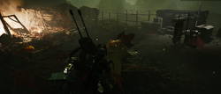
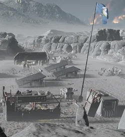

Destroyed House
This 条款 is a stub.
You can help by expanding it.
Instructions: Missing images (变体)
Instructions: Missing images (变体)
__DRUID_标题_PLACEHOLDER__
基本信息 信息
阵营
描述
the Destroyed House is a 小型 to 中型 human 建筑, which can be found during missions. A Pod has crashed on the house, which caused its 摧毁.
the Destroyed House is a 小型 to 中型 human 建筑, which can be found during missions. A Pod has crashed on the house, which caused its 摧毁.
次要特殊地点[edit | edit 来源]
| Variation | 图像 | 目录 | 备注 |
|---|---|---|---|
| 小型 House |  |
|
On rare occasions the pod can be replaced by a hellbomb. |
| Solar Farm |  |
|

图集[edit | edit 来源]
- In the Solar Farm variation, supplies can be found across from the Destroyed House.
- Topographical image of the Destroyed 小型 House